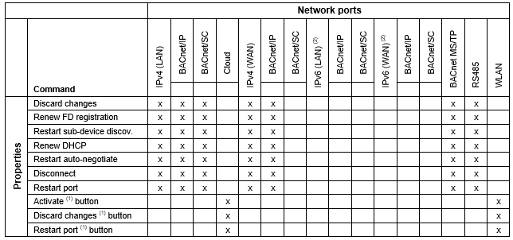

Using the port command functionality
Lists the possible functions that can be selected and performed for the network port command in a drop-down list.

(1) Are directly operable functions.
(2) Not yet available in the current version.
Lists the possible functions that can be selected and performed for the network port command in a drop-down list.

(1) Are directly operable functions.
(2) Not yet available in the current version.